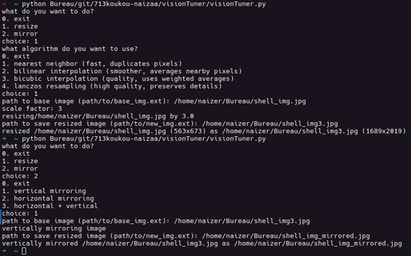

Presentations Scheduler est un composant de planification en C++ qui implémente un algorithme glouton pour affecter des présentations de stages d'étudiants sur un calendrier. Conçu pour une intégration avec une application web PHP, il priorise la performance et l'efficacité grâce à sa compilation.
Vision Tuner est un outil Python en ligne de commande que je développe pour apprendre les algorithmes de traitement d'image de zéro. L'objectif de ce programme est de permettre à ses utilisateurs d'éditer des images via des algorithmes implémentés manuellement (algorithme du plus proche voisin, interpolation bilinéaire, etc.).

Owl Eye est un outil de monitorage qui prend des photos avec la webcam et des captures d'écran à intervalles réguliers, tout en collectant des informations sur le système comme l'adresse IP, l'adresse MAC, le SSID WiFi, et la géolocalisation, et envoie ces données via email. Conçu pour tourner en fond, Owl Eye peut aider à mieux protéger votre appareil ou surveiller son activité à des fins légitimes.
